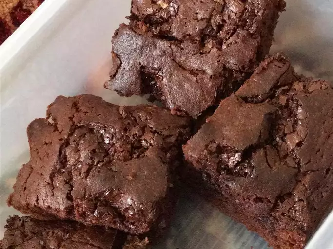

Brownie Recipe

Delicious homemade Brownies
Ingredients
- 1/2 cup (1 stick) unsalted butter
- 1 cup granulated sugar
- 2 large eggs
- 1 teaspoon vanilla extract
- 1/3 cup unsweetened cocoa powder
- 1/2 cup all-purpose flour
- 1/4 teaspoon salt
- 1/4 teaspoon baking powder
Instructions
- Preheat your oven to 350°F (175°C). Grease and flour an 8x8-inch baking pan or line it with parchment paper.
- In a medium saucepan, melt the butter over low heat. Remove from heat once melted and let it cool slightly.
- Stir in the sugar, eggs, and vanilla extract into the melted butter until well combined.
- In a separate bowl, sift together the cocoa powder, flour, salt, and baking powder.
- Gradually add the dry ingredients to the wet ingredients, stirring until just combined. Be careful not to overmix.
- If desired, fold in chocolate chips or chopped nuts into the batter.
- Pour the batter into the prepared baking pan and spread it evenly with a spatula.
- Bake in the preheated oven for 20-25 minutes, or until a toothpick inserted into the center comes out with a few moist crumbs.
- Bake in the preheated oven for 20-25 minutes, or until a toothpick inserted into the center comes out with a few moist crumbs.
- Once cooled, cut into squares and serve.
- Enjoy your homemade chocolate brownies as is or with a scoop of vanilla ice cream on top!